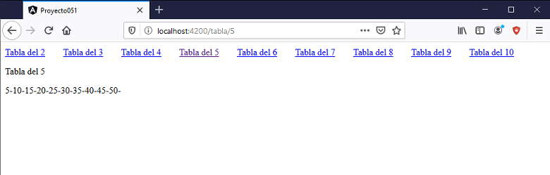
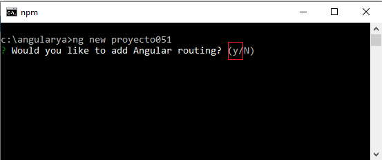

Vimos los conceptos elementales de rutas al empezar el curso, ahora veremos varios conceptos para profundizar el tema de rutas.
Angular se base en el concepto de SPA (Single Page Applications - Aplicaciones de una sola página), lo cual no significa que la URL del navegador sea siempre la misma.
El objetivo de Angular es que cuando cambiamos de URL no se recupere la estructura de la página del servidor, sino que se recree en forma local (salvo que se tengan que hacer peticiones de datos dinámicos al servidor)
Las rutas están dadas por las URL:
http://localhost:4200/ http://localhost:4200/presentacion http://localhost:4200/articulos http://localhost:4200/contacto http://localhost:4200/acercade
Tenemos la ruta raiz '/', otra ruta es 'acercade' etc.
Ahora veremos como trabajar en Angular si una ruta tiene uno o más parámetros. Un ejemplo de ruta con parámetros podría ser pasar el número de artículo en la ruta:
http://localhost:4200/articulos/323
Estamos pasando a la ruta 'articulos' el parámetro '323'. Como vimos anteriormente es obligatorio definir exactamente las rutas que puede procesar la aplicación Angular.
Con un ejemplo analizaremos como declaramos las rutas, pasamos parámetros y como los recuperamos.
Definir en la componente principal de la aplicación 10 hiperínculos con los números del 1 al 10, que llamen a otra ruta de la aplicación que tenga por objetivo mostrar la tabla de multiplicar de dicho valor.
Crear una segunda componente que reciba el parámetro y proceda a mostrar la tabla de multiplicar.
Los enlaces de los números del 1 al 10 siempre deben quedar visibles, lo que debe actualizarse es la componente que calcula la tabla de multiplicar:
Crearemos primero el proyecto y debemos tener cuidado de indicar que utilizaremos rutas en la aplicación Angular:
El concepto de rutas es de suma importancia si vamos a desarrollar aplicaciones medianas o grandes, por eso la herramienta Angular CLI nos consulta cada vez que creamos un proyecto (cuando estamos haciendo pequeñas aplicaciones de prueba es común no activar las rutas en la aplicación Angular, de todos modos se pueden crear los archivos de rutas en forma manual posteriormente)
En la carpeta app se crea el archivo 'app-routing.module.ts' y procedemos a modificarlo agregando una ruta:
import { NgModule } from '@angular/core';
import { Routes, RouterModule } from '@angular/router';
import { TablanroComponent } from './tablanro/tablanro.component';
const routes: Routes = [{
path: "tabla/:nro",
component: TablanroComponent
}];
@NgModule({
imports: [RouterModule.forRoot(routes)],
exports: [RouterModule]
})
export class AppRoutingModule { }
Importamos la clase 'TablanroComponent' (que crearemos en el siguiente paso, por lo que ahora debería mostrar un error):
import { TablanroComponent } from './tablanro/tablanro.component';
Agregamos un objeto al arreglo 'routes' iniciando dos atributos: 'path' que indica el nombre de la ruta y en este caso el parámetro 'nro', y en 'component' indicamos el nombre de la componente que se debe mostrar:
const routes: Routes = [{
path: "tabla/:nro",
component: TablanroComponent
}];
Angular CLI se ha encargado de modificar el archivo 'app.module.ts' con la referencia a la clase 'AppRoutingModule' (es decir no modificamos nada en este archivo):
import { BrowserModule } from '@angular/platform-browser';
import { NgModule } from '@angular/core';
import { AppRoutingModule } from './app-routing.module';
import { AppComponent } from './app.component';
@NgModule({
declarations: [
AppComponent
],
imports: [
BrowserModule,
AppRoutingModule
],
providers: [],
bootstrap: [AppComponent]
})
export class AppModule { }
Procedemos a crear la componente 'TablanroComponent':
ng generate component Tablanro
Modificamos el archivo 'tablanro.component.ts':
import { Component, OnInit } from '@angular/core';
import { ActivatedRoute, ParamMap } from '@angular/router';
@Component({
selector: 'app-tablanro',
templateUrl: './tablanro.component.html',
styleUrls: ['./tablanro.component.css']
})
export class TablanroComponent implements OnInit {
constructor(private activatedRoute: ActivatedRoute) { }
nro!: number;
tabla!: string;
ngOnInit(): void {
this.activatedRoute.paramMap.subscribe((parametros: ParamMap) => {
this.nro = parseInt(parametros.get("nro")!);
this.tabla = '';
for (let x = 1; x <= 10; x++) {
let t = x * this.nro;
this.tabla += t + '-';
}
})
}
}
Importamos la clase ActivedRoute y la interface ParamMap:
import { ActivatedRoute, ParamMap } from '@angular/router';
Al constructor inyectamos un objeto de tipo ActivedRoute:
constructor(private activatedRoute: ActivatedRoute) { }
Definimos dos atributos 'nro' y 'tabla' que luego mediante interpolación mostraremos en la vista de la componente:
nro!: number; tabla!: string;
El método onInit se ejecutará una única vez cuando se cree la componente, luego como el usuario puede presionar sucesivas veces los enlaces con la misma ruta pero con distintos valores en su parámetro, debemos tener alguna forma para que dichos valores se refresquen en la vista. La clase 'ActivatedRoute' dispone de un método llamado 'paramMap' que llamando a suscribe logramos que cada vez que cambia el valor del parámetro de la ruta se ejecute la función anonima que le pasamos como parámetro.
La función anónima recibe como parametro un objeto de la clase ParamMap que contiene entre otros un método llamado 'get' que nos permite recuperar el parámetro 'nro' de nuestro problema:
ngOnInit(): void {
this.activatedRoute.paramMap.subscribe((parametros: ParamMap) => {
this.nro = parseInt(parametros.get("nro")!);
this.tabla = '';
for (let x = 1; x <= 10; x++) {
let t = x * this.nro;
this.tabla += t + '-';
}
})
}
Modificamos el archivo 'tablanro.component.html':
<p>Tabla del {{nro}}</p>
<p>{{tabla}}</p>
En la vista mostramos el atributo 'nro' y el string con la tabla de multiplicar que lo recuperamos del atributo 'tabla'. Recordar que estos dos atributos se modifican en la función anonima que le pasamos al método 'suscribe' del objeto paramMap que almacena el objeto de la clase 'ActivadedRouter' que se le inyectó en el constructor.
Codificamos la componente principal 'app.component.html':
<span *ngFor="let numero of [2,3,4,5,6,7,8,9,10]" style="margin-right: 2rem;">
<a routerLink="tabla/{{numero}}">Tabla del {{numero}}</a>
</span>
<div>
<router-outlet></router-outlet>
</div>
El template de la componente principal siempre está visible, mediante la directiva *ngFor generamos los enlaces:
<span *ngFor="let numero of [2,3,4,5,6,7,8,9,10]" style="margin-right: 2rem;">
<a routerLink="tabla/{{numero}}">Tabla del {{numero}}</a>
</span>
Es importante notar que mediante la propiedad 'routerLink' indicamos la ruta que debemos cargar y el parámetro a pasar:
routerLink="tabla/{{numero}}"
Luego es fundamental la etiqueta 'router-outlet', que es el lugar donde se sustituye con el contenido de la ruta seleccionada de un enlace de la página:
<router-outlet></router-outlet>
De esta forma logramos que simpre se muestren los enlaces y lo que cambia es la ruta que cargamos y se hace en el lugar que especificamos la etiqueta 'router-outlet'.
Podemos probar esta aplicación en la web aquí.
Una ruta puede tener más de un parámetro, por ejemplo si necesitamos pasar un segundo parámetro en el ejercicio anterior que indique la cantidad de términos de la tabla de multiplicar que se va a mostrar, deberíamos hacer los siguientes cambios:
En el archivo 'app-routing.module.ts' cambiar el atributo path de la ruta:
const routes: Routes = [{
path: "tabla/:nro/:terminos",
component: TablanroComponent
}];
En la componente 'tablanro.component.ts' cambiar el for con el parámetro recibido:
ngOnInit(): void {
this.activatedRoute.paramMap.subscribe((parametros: ParamMap) => {
this.nro = parseInt(parametros.get("nro")!);
this.tabla = '';
for (let x = 1; x <= parseInt(parametros.get("terminos")!); x++) {
let t = x * this.nro;
this.tabla += t + '-';
}
})
}
Finalmente los enlaces en el archivo 'app.component.html' requieren dos parámetros, por ejemplo si queremos mostrar 20 términos de la tabla de multiplicar el código debe ser:
<a routerLink="tabla/{{numero}}/20">Tabla del {{numero}}</a>